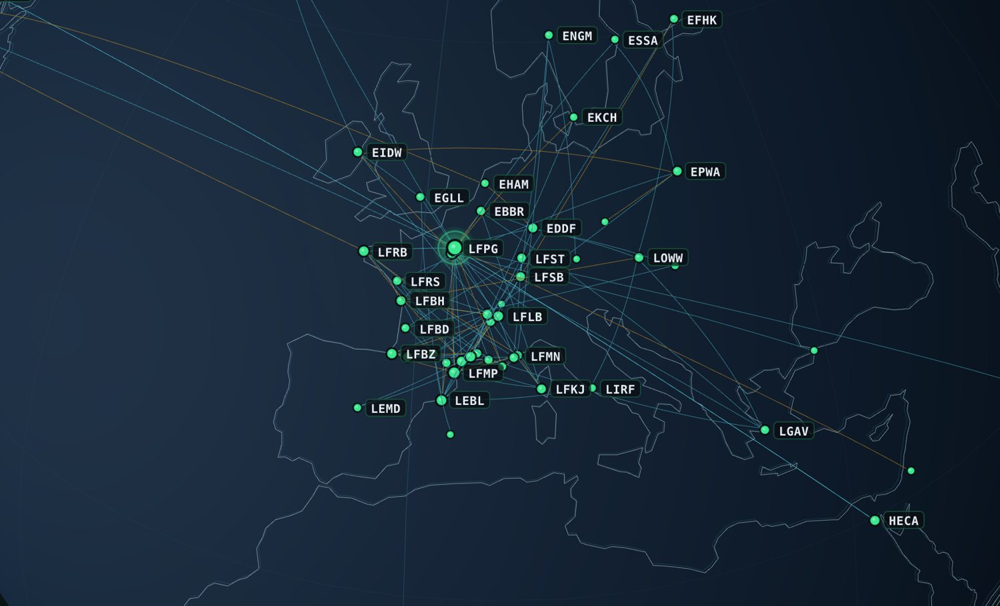

FlightBrief prepara tu vuelo, lo sigue en directo en Microsoft Flight Simulator, anuncia tus callouts como un verdadero copiloto, convierte tu tableta en un EFB — y lo guarda todo en tu diario de vuelo. Y si haces stream, tu chat sube a bordo.
FlightBrief te acompaña antes, durante y después de cada vuelo — sin malabares entre diez ventanas.
Tu plan de vuelo se importa desde SimBrief en un clic y tu tarjeta de briefing aparece al instante en tu stream.
Inicia el seguimiento: altitud, velocidad, fases de vuelo y progreso en directo — en tu PC y en tu tableta.
Al llegar, el vuelo se añade a tu diario con su trazado, tu tasa de toma y sus estadísticas.
FlightBrief lee el estado de tu avión en el simulador: luces, tren, flaps, freno de estacionamiento, reglaje altimétrico. Una voz anuncia cada etapa del vuelo, vigila tu aproximación y te recuerda lo que olvidas — como un verdadero copiloto.
¿Sin ideas de vuelo? Di cuánto tiempo tienes: FlightBrief propone tres destinos adaptados a tu avión, con la meteo real, priorizando aeródromos donde nunca has aterrizado. Luego rasca países, acepta los retos de los aeropuertos más temidos y descubre tu año de piloto.
Copia un enlace, pégalo en OBS: tu tarjeta de briefing, tu telemetría en directo y tus alertas aparecen en tu escena y se actualizan solas durante el vuelo.
El bot de FlightBrief responde a las preguntas de tus viewers sobre el vuelo en curso y lanza una apuesta sobre tu aterrizaje al inicio del descenso. Quien adivine la tasa de toma más exacta gana y su nombre aparece en pantalla.
FlightBrief lee la velocidad vertical exacta en el momento del impacto, medida por el simulador, y no un valor aproximado. Califica tu aterrizaje y te lo hace revivir en 3D.
Cada vuelo se añade a tu logbook con su trazado real, sus fases y tu aterrizaje. Y tu perfil los reúne en un globo 3D que no te cansarás de girar.

Sigue tu progreso en tus aerolíneas virtuales y en IVAO o VATSIM. Los tours terminados conservan su balance y cada avión de tu hangar tiene sus propias estadísticas.
Escanea un código QR e instala FlightBrief en tu iPhone o Android. Durante el vuelo, sigue tu avión en directo en el mapa; y después, consulta tu diario en cualquier sitio, incluso en un avión.
Novedades nacidas de vuestras ideas en directo.
Español, inglés y francés: app, overlays, bot, app móvil y página de descarga.
«¿Adónde volar hoy?» tiene en cuenta el ATC en línea y los events de VATSIM.
Callouts, aproximación estabilizada, mínimos, radioaltímetro, alertas y anuncios de cabina.
Mapa con el ATC de VATSIM / IVAO, plan de vuelo y cartas de aeropuerto.
Tres ideas de vuelo para el tiempo que tienes, con la meteo real.
Tu año de piloto, el mapa para rascar y los retos de los aeropuertos más temidos.
Teclas y diales: seguimiento, captura, copiloto, volúmenes. Se instala con un clic.
Tus vuelos de Little Navmap, Volanta o una hoja de cálculo, en segundos.
Para streamers: pasajeros del chat, pasaportes, sobrevuelos y predicciones de Twitch.
Un solo archivo, gratis, para Windows 10 y 11.
Descargar para WindowsEl archivo FlightBrief-Setup.exe — es el único que necesitas.
Si Windows muestra «Windows protegió su PC»: Más información → Ejecutar de todas formas.
FlightBrief se instala y se abre solo. Las siguientes actualizaciones se instalan con un clic desde la app y tus vuelos se conservan.
Sí. Copiloto de voz, EFB en tableta, ideas de vuelo, logbook, carrera, mapa para rascar y Flight Wrapped no tienen nada que ver con el directo. En el primer arranque, deja «Hago directos» desactivado: las pestañas Live, Twitch y A bordo desaparecen (puedes reactivarlas en el Perfil).
Lee las variables estándar del simulador (altitud, velocidad, tren, flaps, faros, altímetro…), que la mayoría de los aviones mantienen al día. Con algunos add-ons muy avanzados (Fenix, PMDG…), un recordatorio que depende de sus propios sistemas simplemente no suena; los avisos de altitud, velocidad y altura funcionan con todos.
Sí: Logbook → «Importar un historial». Exporta tus vuelos en CSV desde Little Navmap, Volanta o una hoja de cálculo; FlightBrief reconoce las columnas solo y no crea duplicados.
Sí: Stream Deck clásico, XL, Mini y Stream Deck + (diales y pantalla táctil). Perfil → Stream Deck → «Instalar el plugin»: se instala con un clic, ya emparejado con tu PC.
Sí, y lo seguirá siendo: sin versión de pago, sin suscripción, sin publicidad. FlightBrief es un proyecto personal compartido con la comunidad, bajo licencia libre MIT.
A ningún sitio: todo se guarda en un archivo de tu PC, con una copia de seguridad automática diaria. No hay que crear ninguna cuenta y no se envía nada por Internet. Incluso la app móvil se sincroniza directamente con tu PC por tu Wi-Fi.
No. Para que lea tu chat, basta con indicar el nombre de tu canal. Para que responda, registras una vez tu propia aplicación de Twitch (un asistente te guía, 2 minutos) y conectas una cuenta (la tuya o una creada para el bot) en la página oficial de Twitch, con un simple código. FlightBrief nunca ve tu contraseña y el acceso se guarda cifrado en tu PC.
Al inicio de tu descenso, el bot anuncia las apuestas. Tus viewers escriben !apuesta seguido de una tasa en ft/min (por ejemplo !apuesta 180). Las apuestas se cierran en final corta y, en la toma, gana el más cercano a la tasa real: su nombre aparece en pantalla y sube en la clasificación. Todo se configura en la pestaña Twitch.
Sí. El instalador no está firmado (un certificado de firma cuesta varios cientos de euros al año), así que Windows SmartScreen pide confirmación la primera vez. Haz clic en «Más información» y luego en «Ejecutar de todas formas». El código es público en GitHub si quieres comprobar lo que hace.
El seguimiento en directo funciona con Microsoft Flight Simulator (2020 y 2024) mediante SimConnect. El briefing, el logbook, la carrera, el ATC de VATSIM / IVAO y los overlays funcionan sin simulador. La compatibilidad con X-Plane está en estudio.
En FlightBrief, pestaña Admin → Aplicación móvil: activa el acceso y escanea el código QR. Una página te guía paso a paso (solo una vez) y luego añades la app a tu pantalla de inicio. Funciona en iPhone y Android.
Sí para consultar: tu logbook, tus carreras, tus tours y tu hangar siguen disponibles en cualquier sitio, incluso en modo avión. Para actualizarlos o seguir un vuelo en directo, tu teléfono debe estar en el mismo Wi-Fi que tu PC, con FlightBrief abierto.
FlightBrief se distribuye para Windows, porque Microsoft Flight Simulator funciona en Windows. En Mac o Linux, puedes ejecutarlo desde el código fuente (sin el seguimiento de vuelo en directo).
¡Hola, soy Lucas! No soy desarrollador de profesión: construí FlightBrief haciendo vibe coding con Claude, la IA de Anthropic, porque lo necesitaba para mis propios directos. Muchas funciones nacieron de ideas propuestas por el chat.
¿Una idea, un bug? Abre una issue en GitHub, o ven a contármelo en directo.
twitch.tv/LLCenLiveVen a volar con nosotros en directo →